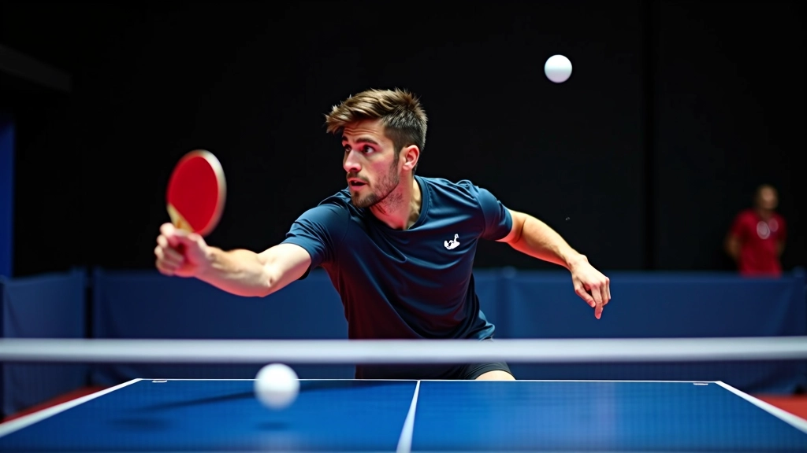
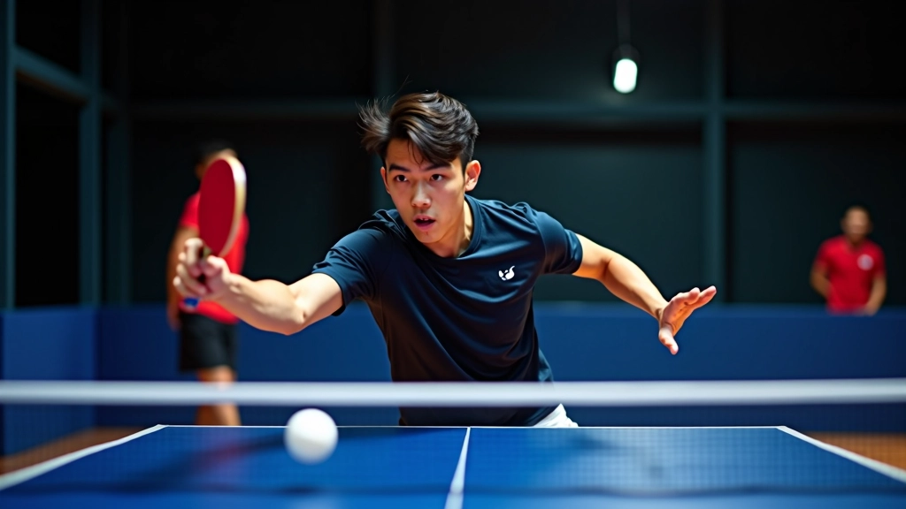

أساسيات تمارين التغذية للمبتدئين والمتوسطين
تعرف على الخطوات الأولى والتقنيات الأساسية لبدء تمارين التغذية
اقرأ المقالكل ما تحتاج لمعرفته عن تمارين التغذية المتعددة بالكرات في تنس الطاولة
التدريب المنتظم يمكن أن يساهم في تحسن سرعة الاستجابة خلال فترة زمنية متغيرة حسب الفرد. بعدين، مع استمرار التمارين، تبدأ تشوف تحسن واضح في التركيز والقدرة على التعامل مع الكرات السريعة.
آه، أكيد! عندنا برنامج خاص للمبتدئين بيركز على الأساسيات أولاً. بنبدأ بتمارين بسيطة وبنزود الصعوبة تدريجي، بحيث اللاعب يتعلم التقنيات الصحيحة من البداية ما يكون في أخطاء.
في التغذية العادية، المدرب بيرمي كرة واحدة، بس في التغذية المتعددة بيرمي كرات متتالية بسرعات واتجاهات مختلفة. ده بيطلب من اللاعب ركز أكتر وسرعة استجابة أسرع، وبيقرب أكتر من ضغط المباراة الحقيقية.
الأفضل 2 إلى 3 جلسات في الأسبوع على الأقل. لكن كل لاعب اختلف، فبناءً على مستواك والأهداف تبعتك، ممكن نعدل البرنامج بتاعك.
بصراحة، التغذية المتعددة تحتاج مدرب أو شريك تدريب، لأن المدرب هو اللي بيرمي الكرات بالسرعة والزوايا الصحيحة. لكن ممكن تتدرب على تقنيات معينة لوحدك قبل ما تروح الجلسات.
اللاعبين من 8 سنين فما فوق ممكن يبدأوا، بس بتمارين معدلة حسب العمر والمستوى. الناشئين والشباب بيستفيدوا أكتر من التمارين، لكن الكبار كمان ممكن يطوروا مهاراتهم.
تواصل معنا مباشرة وهنساعدك في كل حاجة تخص التدريب والبرامج
تعرف على الخطوات الأولى والتقنيات الأساسية لبدء تمارين التغذية
اقرأ المقال
طور ضربتك الأمامية من خلال تمارين متخصصة وموجهة
اقرأ المقال
احسّن سرعتك الحركية والاستجابة مع تمارين متخصصة
اقرأ المقال